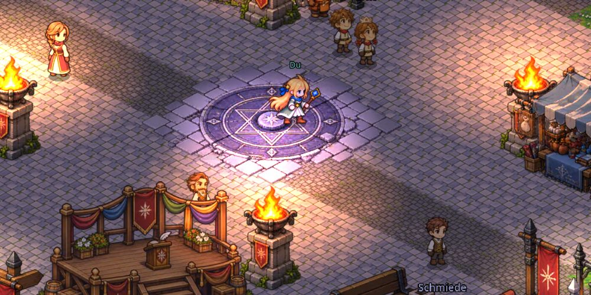
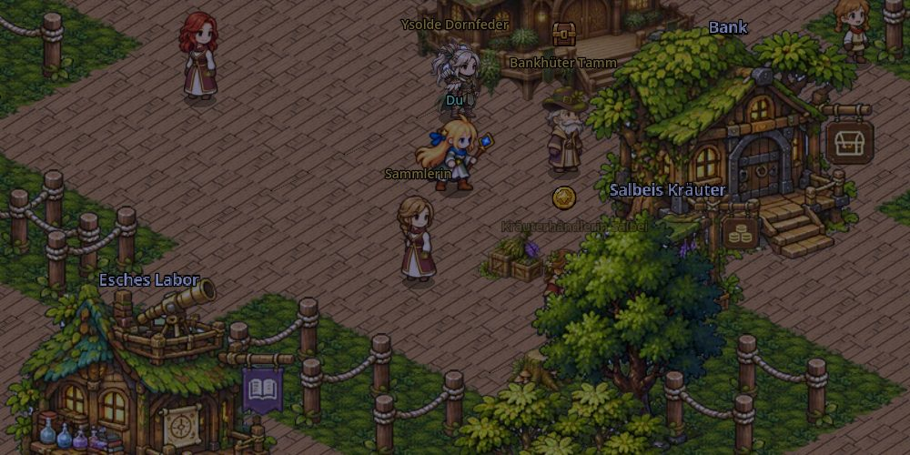
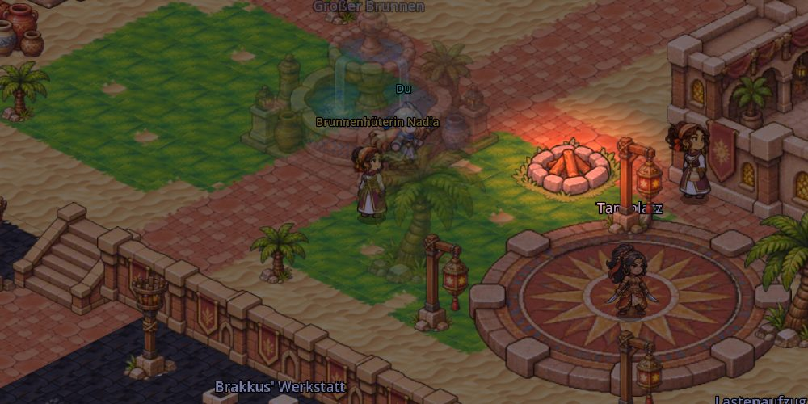
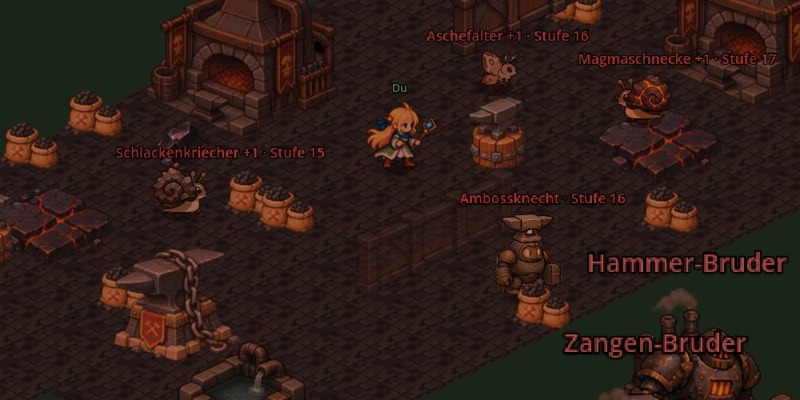

Asterfall
Demo · Arbeitstitel · CazeX Studio
Fünf Helden haben die Welt gerettet – so erzählt man es. Du beginnst als Novize in Kreuzweg, lernst deine Klasse und folgst den Spuren der Splitter, die vom Himmel fallen. Und irgendwo fehlt in jedem Lied ein Ton.
Demo testenLäuft direkt im Browser, am PC und am Handy. Beim ersten Start lädt das Spiel etwa 80 MB (WLAN empfohlen). Dein Spielstand bleibt im Browser gespeichert.
Version: __VERSION__




Was in der Demo steckt
- Akt 1 in Kreuzweg: Grundausbildung bei Ye, Probestunden bei den Gesandten, die Nacht des Sternenfalls und deine Klassenwahl.
- Grünwacht: Bogenschütze und Monster-Zähmer lernen hier, mit dem Dungeon Pilzhöhle unter dem Urbaum.
- Glutoase: Rüstungsschmied, Klingentänzerin und Sternensängerin lernen hier, mit dem Dungeon Vulkanschmiede der Ketten.
- Kämpfe mit Zugleiste: Parieren und Ausweichen im richtigen Moment, Reihen, Elemente und Bosse, die man nur gemeinsam schafft.
- Kreuzweg-Karten: ein Kartenspiel mit Monsterkarten, die du unterwegs findest.
- Tag und Nacht nach deiner Uhrzeit: Nachts sind andere Leute und andere Monster unterwegs.
- Zusammen spielen: Gruppen und gemeinsame Dungeons (in der Demo noch im Aufbau).
So testest du
- Demo testen drücken, warten bis das Spiel geladen ist, dann im Menü Kreuzweg-Demo wählen.
- Beim ersten Start wählst du einen Spitznamen. Er steht in deinem Feedback und auf Wunsch in der Dankesliste im Spiel. Bitte keinen vollen echten Namen und keine E-Mail-Adresse.
- Etwas gefunden oder eine Idee? Im Spiel oben rechts auf Feedback drücken. Es öffnet sich ein kurzes Formular, in dem dein Spitzname und der Ort im Spiel schon eingetragen sind.
- Wer die Demo durchspielt (Ende von Grünwacht oder der Glutoase), bekommt einen Tester-Code. Mit Abschluss melden ist er bei uns eingetragen. Zum Start des fertigen Spiels gibt es dafür eine Belohnung.
- Am besten am PC in Chrome, Edge oder Firefox. Am Handy geht es auch. Spielstand und Spitzname bleiben in diesem Browser auf diesem Gerät.
Steuerung am PC
- Klicken oder WASD: laufen
- E oder Leertaste: reden, benutzen
- F: Text weiter (halten = schnell)
- J Aufträge · I Tasche · C Werte · K Fähigkeiten · L Kartenalbum · X hinsetzen
Steuerung am Handy
- Antippen: dorthin laufen
- Aktions-Knopf: reden, benutzen
- Im Kampf: Fähigkeit antippen, dann das Ziel
- Gegner greift an: tippen, wenn sich der Ring schließt